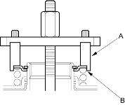
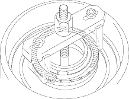
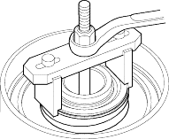
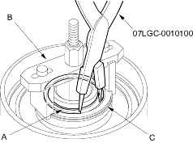

- Be sure the special tool (A) is adjusted to have full contact with the spring retainer (B) on the clutches.

- If either end of the special tool is set over an area of the spring retainer which is unsupported by the return spring, the retainer may be damaged.

- Compress the spring until the snap ring can be removed.

- Remove the snap ring (A). Then remove the special tools (B), spring retainer (C) and return spring.
